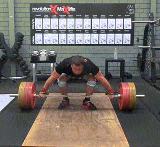
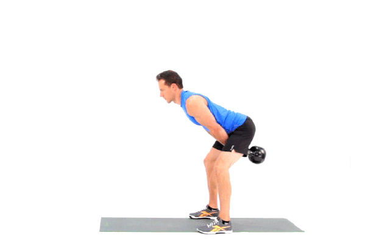
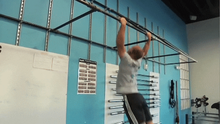
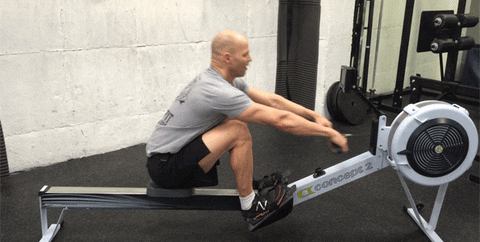

Ćwiczenia
Crossfit jest składową wielu dyscyplin sportowych. Stanowi połączenie trójboju siłowego,
dwuboju olimpijskiego, ćwiczeń siłowych, gimnastycznych i kondycyjnych.
Trójbój siłowy
| Bench press |
Back squat |
Deadlift |
Dwóbój olimpijski
| Snatch |
Clean and jerk |
Ćwiczenia siłowe
| Strict press |
Kb swing |
Thruster |
Ćwiczenia gimnastyczne
| Air squat |
Push ups |
Pull ups |
Rope climb |
Box jump |
Wall balls |
Muscle ups |
Handstand walk |
Ćwiczenia kondycyjne
| Run |
Row |
Assault bike |
Single unders |
Double unders |
Są to zaledwie podstawowe ćwiczenia. Istnieje cała masa ich wariantów. Za odpowiednie dobranie ćwiczeń odpowiada trener prowadzący zajęcia.
Wybrane ćwiczenia



